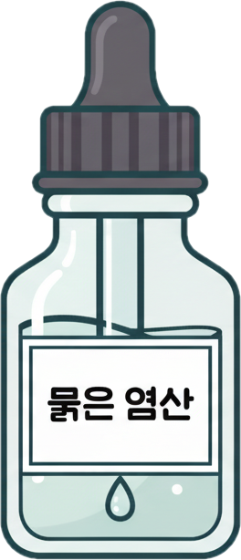
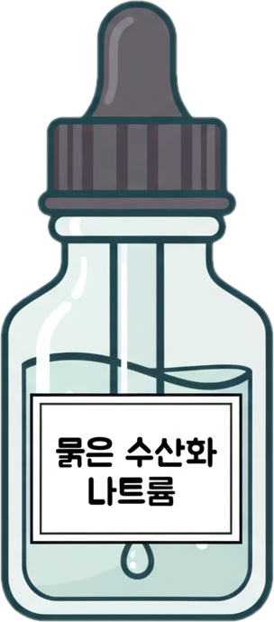
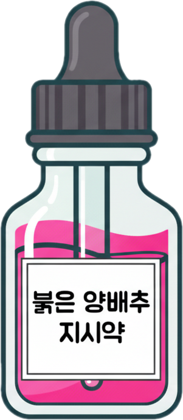

관찰할 홈을 클릭하세요.
• 묽은 염산에 묽은 수산화 나트륨 용액을 많이 넣을수록 붉은색 / 노란색 계열에서 붉은색 / 노란색 계열로 변한다.
➡ 산성 용액에 염기성 용액을 넣을수록 산성이 약 / 강 해진다.
• 묽은 수산화 나트륨 용액에 묽은 염산을 많이 넣을수록 노란색 / 붉은색 계열에서 노란색 / 붉은색 계열로 변한다.
➡ 염기성 용액에 산성 용액을 넣을수록 염기성이 약 / 강 해진다.